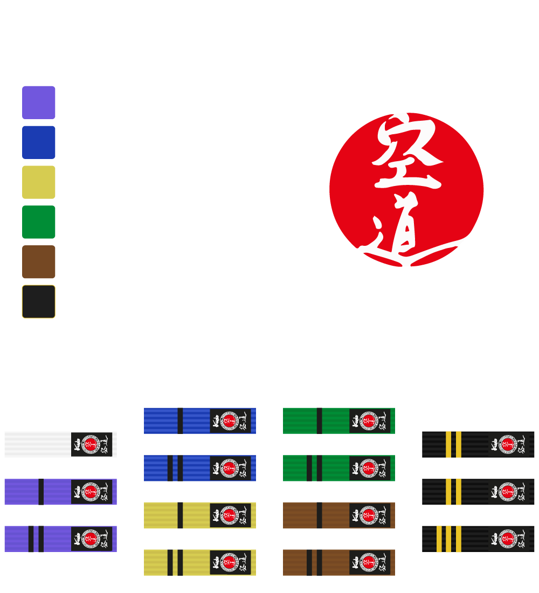

Miembro de Kudo International Federation - KIF
¿Que es Kudo?
El Kudo (空道) como es conocido actualmente, debido a su propia evolucion a pasado por varios nombres donde tenemos entre 1981 hasta 1995 fue conocido como "Karate Do Daidojuku", luego desde 1995 hasta 2001 fue conocido como "Kakuto Karate", despues desde 2001 hasta 2015 fue conocido como "Daido Juku Kudo (大道塾空道)" y desde 2015 hasta la fecha se le conoce internacionalmente como KUDO.
El Kudo, es un arte marcial híbrido japonés originario de la escuela de artes marciales Daido Juku(Escuela del camino abierto), este fue fundada por Takashi Azuma (1949-2021), quien creo un estilo combinando el conocimiento que tenia siendo cinto negro 9dan en karate Kyokushinkai (Entregado por Jon Bluming ), y cinto negro 3dan en Judo. Se convirtió en el estilo líder de las Artes Marciales Mixtas en Japón, promoviendo el Budo como educación física y social.
Kudo significa "el Arte de la Tolerancia o del Todo" y permite a atletas de diversas disciplinas competir en igualdad de condiciones, utilizando una variedad de técnicas para vencer al oponente con máxima eficacia y mínimo esfuerzo.
A diferencia del Karate tradicional,
Kudo involucra contacto completo y técnicas reales cuerpo a cuerpo,
y se considera tanto un deporte competitivo como un sistema de educación juvenil,
autodefensa y mantenimiento de la salud para adultos, con una tradición de respeto y etiqueta llamada
Actualmente el organigrama de la Kudo International Federation - KIF es la siguiente , la que a su vez administra la participacion de 47 paises miembros y 14 paises en vias de ser miembros, lo que da un total de 61 paises en funcionamiento en los 5 continentes
Vídeo promocional Torneo Mundial de Kudo 2023 (Hokutoki)
Kudo Chile - Sensei Rodrigo Vergara - Branch Chief Chile
Vídeo promocional Torneo Mundial de Kudo 2014 (Hokutoki)
Proximos Eventos
Primer torneo nacional open de Kudo Chile 2024

Evento a realizarse el 11 de mayo de 2024 en Las moras #555, el Bosque - Santiago de Chile.
Inscripciones hasta el 28 de abril de 2024 - Formulario de inscripcion
Organiza Chikara
Torneo Panamericano de Kudo Mexico 2024

Evento a realizarse el 5 y 6 de Octubre de 2024 Saltillo, Coahuila, Mexico
Organiza Kudo Mexico
Dojos oficiales en Chile

Sensei Rodrigo Vergara, 3 Dan. Santiago, Padre Hurtado

Sensei Raul Farias, 1 Dan.
 Chikara
Chikara
Senpai Angelo Zaio, 2 Kyu. Santiago

Sensei Christian Silva, 1 Dan. Isla de Maipo

Sensei Juan Antonio Concha, 1 Dan. Punta Arenas y Santiago

Senpai Erwin Henriquez, 2 kyu. Maipu, Santiago

Senpai - Dojo kollellaullin. Panguipulli

Senpai - Dojo KTS. Niebla

Senpai - Dojo Kuantum. Puerto Montt

Senpai Francisco Hernandez, 1 kyu. Concepcion

Sensei Roberto Medina, 2 Dan. Santiago
Budo/Bushido - El Código del Samurai en Kudo
Kudo como toda arte marcial, tiene una filosofia tras su enseñanza deportiva.
Esta filosofia es reflejada en lo que conocemos como Dojo Kun y la aplicacion del Budo-Bushido en la vida del Kudoca.

Para muchos no es conocido que la filosofia detras del Kudo es el Budo visto desde los ojos del gran maestro Azuma, lo que nos lleva a estudiar los puntos clave de un samurai en la vida morderna o tambien conocido como Bushido y lo que se comoce como "Las «siete virtudes» del bushidō"
義 Gi - Justicia o Rectitud
Sé honrado en tus tratos con todo el mundo. Cree en la justicia, pero no en la que emana de los demás, sino en la tuya propia. Para un auténtico samurai no existen las tonalidades de gris en lo que se refiere a honradez y justicia. Sólo existe lo correcto y lo incorrecto.
勇 Yu - Coraje
Álzate sobre las masas de gente que temen actuar. cultarse como una tortuga en su caparazón no es vivir. Un samurai debe tener valor heroico. Es absolutamente arriesgado. Es peligroso. Es vivir la vida de forma plena, completa, maravillosa. El coraje heroico no es ciego. Es inteligente y fuerte. Reemplaza el miedo por el respeto y la precaución.
仁 Jin - compasión
Mediante el entrenamiento intenso el samurai se convierte en rápido y fuerte No es como el resto de los hombres. Desarrolla un poder que debe ser usado en bien de todos. Tiene compasión. Ayuda a sus compañeros en cualquier oportunidad. Si la oportunidad no surge, se sale de su camino para encontrarla.
礼 Rei - Respeto
Los samurai no tienen motivos para ser crueles. No necesitan demostrar su fuerza. Un samurai es respetuoso con sus enemigos porque sin esta muestra directa de respeto, se estaría comportando como un animal. Un samurai recibe respeto no solo por su fiereza en la batalla, sino también por su manera de tratar a los demás. La auténtica fuerza interior del samurai se vuelve evidente en tiempos dificiles.
誠 Makoto - Honestidad
Sinceridad. Cuando un samurai dice que hará algo, es como si ya estuviera hecho. No ha de «dar su palabra», no necesita prometer ni amenazar, porque el simple hecho de hablar forma parte de la acción. Hablar y hacer son la misma acción.
名誉「名譽」Meiyo - Honor
El auténtico samurai solo tiene un juez de su propio honor, y es él mismo. Las decisiones que tomas y cómo las llevas a cabo son un reflejo de quién eres en realidad. No puedes ocultarte de ti mismo.
忠義 Chugi - Lealtad
Haber hecho o dicho "algo", significa que ese "algo" le pertenece. Es responsable de ello y de todas las consecuencias que le sigan. Un samurai es intensamente leal a aquellos bajo su cuidado. Para aquellos de los que es responsable, permanece fieramente fiel. Las palabras de un hombre son como sus huellas; puedes seguirlas donde quiera que él vaya.
Grados en Kudo

Los grados en Kudo van del blanco al negro, contando en cuenta regresiva desde el 10 al 1 a medida que avanza luego de graduarse de blanco. Siguiendo esta logica un 9 kyu (Purpura) avanza a un 8 kyu(Azul), otro ejemplo es un 1 Kyu (cafe) luego de graduarse pasa a 1 Dan (Negro-Shodan).
Kihon Geiko
Kihon o técnicas básicas son la base del golpe de Kudo y son parte durante la prueba de promoción del cinturón. Es normal su ejecucion al inicio o fin de cada sesion de entrenamiento.
Vídeo oficial producido por la Federación Internacional de Kudo
Vídeo producido por la Federación Chilena de Kudo
World Kudo Championship (Hokutoki)
Cada cuatro años tenemos la maxima competencia de Kudo conocida como World Kudo Championship o en japones Hokutoki. A continuacion les dejamos un Highlight del ultimo mundial en Japon el año 2023, celebrando el 6º Campeonato del Mundo y el 3º Campeonato del Mundo Juvenil.
Final Categoria +270 Hokutoki 2023 - Explicado por Branch Chief de España
Vídeo promocional Highlight Hokutoki 2023
En el siguiente link podra encontrar un listado con los resultados de todas las copas del mundo
En el mundial del 2014, debemos destacar el 3er lugar en categoria -240 masculino, al Sensei Nicolas Nuñez de Santiago.